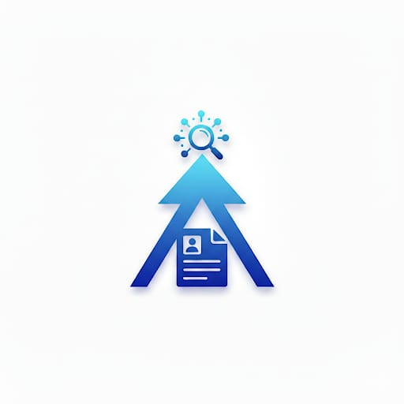

Resume Analysis and Job Recommendations
Unlock your career potential with AI-driven resume insights and personalized job suggestions.
1️⃣ Upload Your Resume
Upload your resume in PDF or DOCX format. Our AI reads and extracts your skills, education, and experience.
2️⃣ Resume Analysis
Advanced AI evaluates your resume to highlight strengths, detect skill gaps, and suggest optimizations.
3️⃣ Job Recommendations
Get job recommendations tailored to your expertise, career goals, and preferred work location.